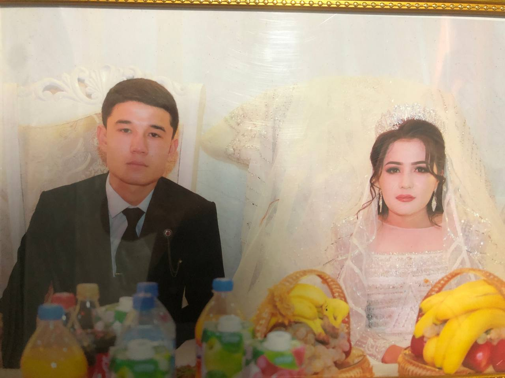

2005-yilda tug‘ilganlar
Oilamizning to‘ng‘ich farzandi, mening g‘amxo‘r akam. Kamola yangam bilan birga juda baxtli.
2004-yilda tug‘ilganlar
Oilamizning samimiy va shirinso‘z yangasi. Akam bilan birgalikda baxtli hayot kechirmoqdalar.
Akam va yangam 2021-yildan boshlab bir-birlarini yaxshi ko‘rib, sevishib kelishgan.
Yillar davomida sinalgan bu sof sevgi nihoyat 2025-yilda go‘zal to‘y bilan mustahkamlandi va ular oila qurishdi. Ular bir-birlarini juda qattiq sevadilar! ✨